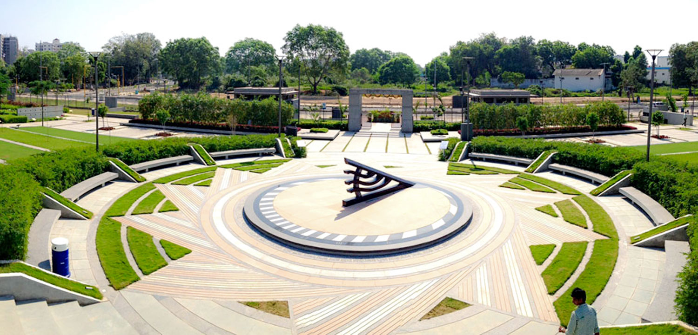
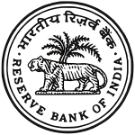
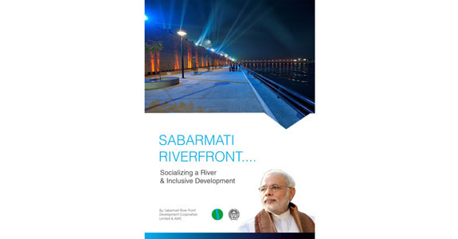

Sabarmati Riverfront A New Landmark of Business Destination :1964 Bernard Kohn, French architect residing in Ahmedabad creates a proposal for Integrated Planning & Development of Sabarmati Riverfront, calling for reclamation of 30 hectares of land. 1966 Kohn’s proposal is claimed technically feasible by Government of Gujarat after technical studies are completed. 1976 Riverfront Development Group proposes an incremental approach to reduce the need for initial capital investment. 1992 National River Conservation Plan proposes construction of sewers and pumping stations at the periphery of the city as well as upgrading of existing sewage treatment plants. |
DEATAILS |
|  The Sabarmati River is a monsoon-fed river that flows north-south through Ahmedabad, bisecting the city into its western and eastern halves. It has been an integral aspect of Ahmedabad city since its foundation. Initially, the river was the city’s prime source of water. Today, water is supplied from many distant sources. Nonetheless, the river continues to be important. It has provided space for cultural and recreational activities along the banks. Mahatma Gandhi set-up his ashram along the banks of the river and during the freedom movement, the Salt March began from here. The wide, oft-dry riverbed and riverbanks were used more extensively to launder clothes and to dye textiles. During the dry seasons, the river bed was used for farming. It also became a venue for other informal economic activities such as the ‘Ravivari’- Sunday flea market. Gradually, many of the city’s migrant and poor population began to live in informal settlements on the river banks. |
ABOUTProposals to achieve the same have been made since the 1960s and it was finally in 1998 that this multi-dimensional project was envisioned and undertaken by the city. Sabarmati Riverfront Development Proposal in 1998. It included technical assessments and strategies for various aspects of the project, namely-
|
| HISTORY OF SABARMATI RIVERFRONT |
| 1964 Bernard Kohn, French architect residing in Ahmedabad creates a proposal | 1966 Kohn’s proposal is claimed technically feasible by Government of Gujara | 1976 Riverfront Development Group proposes | 1992 National River Conservation Plan proposes construction | 1997 Environmental Planning Collaborative, under the leadership of Dr. Bimal Patel |
Eminent Occupants ofices :Parks The project devotes around seventy hectares, more than a quarter (26%), of the reclaimed land towards creating public spaces in the heart of the city. These open spaces range from public parks and gardens to shaded plazas and urban forests. The parks shall enhance livability in the neighbourhoods and provide the city with much needed green spaces and respite from the dense built environment. The plazas on the other hand will offer public places for social gatherings, and informal activities to take place. |
STREETS :The SRFD streets have been designed carefully and deliberately to serve as effective movement conduits for various users and to be an extension of the public realm. The SRFD streets run parallel to the river on both banks and provide continuous access to the riverfront development. Access streets at key locations connect the SRFD streets to the rest of the city.  |
FOOD OUTLETS : |
| CONTACTS :
Contact : Mr. Mehul Shah Mobile : 9879010441 Email ID : booking@srfdcl.com ENTER YOUR QUERY : |
| NEW MASTER PLAN :- |
PROJECT-iBackground Sabarmati river has been an integral part in the life of Ahmedabad since the time the city was founded in 1411 along the river banks. Besides being an important source of water, it provided a backdrop to cultural and recreational activities. During the dry seasons, the river bed became a place for farming. With time it also offered place for various informal economic activities |
PROJECT-IIThe Riverfront project creates a public edge along the river on the eastern and western banks. By channeling the river to a constant width of 263m, riverbed land of 204.91 hetares has been reclaimed. The public riverfront extends up to a length of 11.25 kilometers within the city on either banks. |
objectivePhase-II Development The Concept Plan and Design development for Phase II has stepped green multi layered Promenades, excellent Road network, active green Parks, Children's Play area, Food Plaza, Amphitheaters etc. The entire development of the Project is towards Urban Regeneration and Environmental Improvement which will transform the River as a focal point of Leisure and Recreation. |
SRFDCL HOUSE : |
In May 1997, the Ahmedabad Municipal Corporation launched a Special Purpose Vehicle (SPV) - the Sabarmati Riverfront Development Corporation Limited (SRFDCL) under Section 149(3) of the Indian Companies Act, 1956. The SRFDCL was provided with a seed capital of Rs. 9 crore and entrusted with the responsibility of developing the riverfront on a Build, Maintain, Operate and Transfer (BMOT) basis. The SPV model was used to avoid the delays associated with municipal decision-making. Riverbed land, which was originally held by the Government of Gujarat, was transferred to the AMC. AMC has, in turn, granted development rights to SRFDCL for this reclaimed land. |
| LEGAL POLICY: | Information Sharing and Disclosure We will not sell or rent your personally identifiable information to anyone. We will send personally identifiable information about you to other companies or people when We have your consent to share the information. We respond to subpoenas, court orders or legal process. We find that your actions on our web sites violate the Terms of Service. | Information Collection and Use We do not collect personal information for any purpose other than to respond to you (for example, to respond to your queries). If you choose to provide us with personal information like filling out a Contact Us form with an e-mail address or postal address, and submitting it to us through the website, we use that information to respond to your message, and to help you get the information you have requested. |